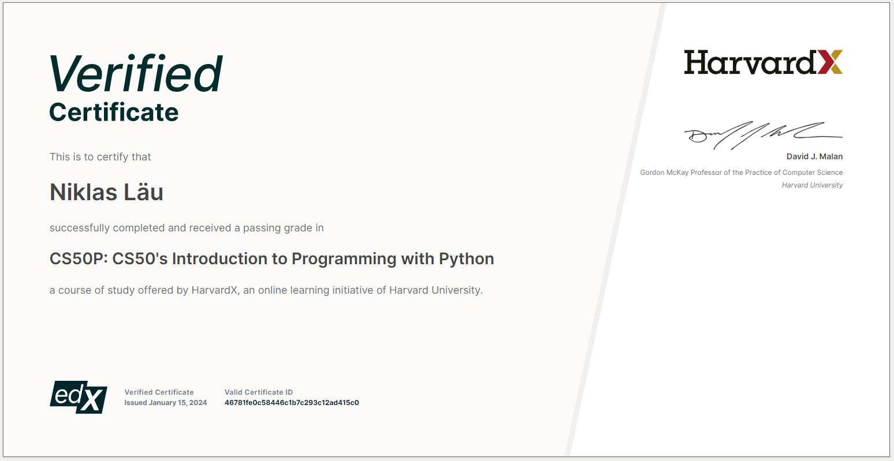

pc
Python 70%
HTML 60%
CSS 50%
Spline 60%
Webflow 10%
Linux 75%
JavaScript 5%
pc
phone
press the big box

Link to certificateCollection of different kinds of projects i have made
small portable wifi detector
DOBBY is a small raspberry pi zero W powered device, capable of wifi mac sniffing through the kismet program. The raspberry pi zero W flashed with raspberry Kali Linux version, is soldered with a pimoroni four letter PHAT display. The device is plugged with a LILYGO LoRa 32 network making it possible to deploy the DOBBY device out of LOS, build so compact that it can be attached to a drone or another transport device, the LoRa will send a message of how many devices have been found in the area of where DOBBY is. DOBBY "start" runs on a python program that is started through a bash file, keybinded to the far left button, that through the python program runs kismet and takes the messages that the program returns and counts how many devices it has detected. After processing the detected devices in a count, the same python program runs a new command in the terminal automatically, sending a message from the LoRa attached to DOBBY, to the LoRa by the operator. the Kismet program is by default programmed by me to not decrypt the macaddresses of the devices, making it possible to simply locate device activity in the area and or through the GPS position time log and device capture time log heatmap the activity with an after action data review. With the directional antenna, DOBBY can detect device activity up to around 20km away. The directional antenna is a 2.4 GHz cut copper antenna with a wifi dongle solderet to it.
THE RUN: After bootup DOBBY will show a startscreen presenting itself followed by a single dot on the PHAT. The single dot indicates that DOBBY is ready for a run. By pressing the far left button DOBBY will display "RUN" followed by "LOAD" and or "ERR" if there are some error messages. "LOAD" indicates that the program is running and is being setup to start the wifi dongle in monitor mode. "FATL" indicates a fatal error, which results in a program shutdown. After "LOAD" DOBBY will display a count from 1 to (infinite) showing how many devices have been detected. The program is capable of logging the detected devices in a .kismet or .png file, aswell as the GPS position logged in time. While DOBBY runs, the LoRa is powered up and if the LoRa is connected to another LoRa (by the operator) it will send the detected devices count to the remote operatior.
DOBBY Is a proof of concept, made for wifi activity alerting. DOBBY's perpouse is to find missing people together with a drone and or a search party in remote environments. DOBBY is made entirely by me with help of a few others and is simply a project of interest, not intended for illegal pourposes.
portable fake eNodeBs detector
Revilio is a raspberry Pi 4 powered fake eNodeBs detecter. Revilio runs on raspberry Dragon OS software with Crocodile Hunter from EFForg installed. Revilios pourpose is to detect and alert the user of fake eNodeBs activity. with the 2.4 ghz directional antenna, Revilio is capable of detecting direction of the fake eNodeBs aka. stingray. therefore Revilio is also called a Crocodile Hunter. Revilio is a portable wardriven Crocodile Hunter capable of finding stingray system operators. With Revilio running, the operator will be able to triangolate the position of the singray.
The Run: Revilio is still in the progress of being build.
REVILIO: revilio is still a project to be made. the plan is to run CH from EFF on the DOS system and display it with a small soldered 16bit LCD display. other hardware like usb connected antenna is still being found. the program will most likely be run through python and alerts and other functions will be displayed on the LCD Display.
niklas1997@live.dk